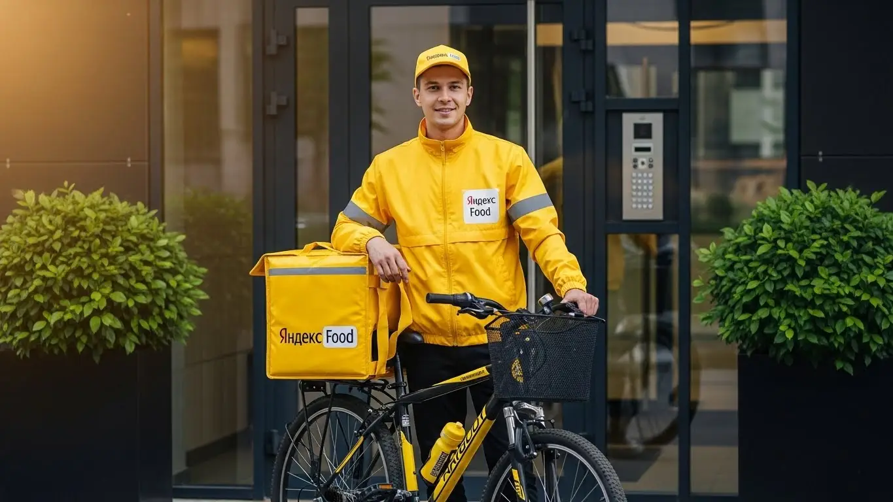
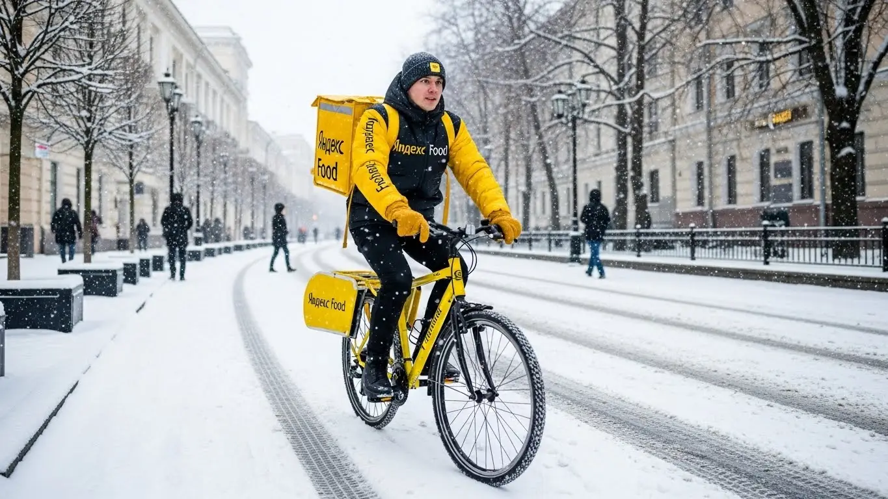

Заработок курьера Яндекс Еда в Новороссийске 2025-2026: гид

- Работа курьером Яндекс Еды в Новороссийске: для кого эта вакансия и что вы получите
- Сколько вы будете зарабатывать курьером в Новороссийске: калькулятор дохода и разбор выплат
- Реальный заработок курьера в Новороссийске: смены и месячный доход
- График работы и форматы занятости
- Требования к кандидату и документы
- Самозанятость, налоги и юридическая чистота
- Пошаговое оформление и первый выход на линию в Новороссийске
- Пешком, на вело или на авто: что выгоднее в Новороссийске
- Районы, маршруты и «топовые» зоны заказов в Новороссийске
- Безопасность, страховка, штрафы и оплата простоя
- Плюсы и возможные минусы работы курьером в Новороссийске
- Реальные истории и отзывы курьеров из Новороссийска
- Ответы на главные вопросы о работе курьером Яндекс Еды в Новороссийске
- Короткие ответы на главные вопросы
- Заключение: твой старт в Новороссийске
Все города
Здорово, будущий коллега! Раздумываешь, не покрутить ли педали или руль, доставляя заказы, и ищешь информацию про работу курьером Яндекс Еды в Новороссийске? Давай честно: тебя ведь терзают сомнения. Не буду ли я зарабатывать копейки, стоя в вечных пробках на Дзержинского? Не «убью» ли свой велик или машину на наших горках за первый же месяц? И что вообще делать, когда задует норд-ост, сносящий всё на своем пути? Забудь про рекламные обещания — здесь будет только правда про реальные условия работы и то, как выживать и зарабатывать на доставке в нашем портовом городе.
Поверь, большинство новичков в Новороссийске сходят с дистанции в первый же месяц. Почему? Потому что никто им не объяснил «внутрянку»: что реальный доход — это не цифра в приложении, а то, что останется после вычета бензина, налога и ремонта. Что рейтинг и приоритет решают всё, а доставка в Южный район и в центр — это две разные работы с разной оплатой по времени и силам. Чтобы заранее изучить все условия, посмотреть калькулятор дохода и подать заявку, изучи страницу про работу курьером Яндекс Еда в Новороссийске. Не зная этих тонкостей, ты будешь совершать те же ошибки, теряя деньги и нервы.
В этом гиде я разложу всё по полочкам. Мы посчитаем, сколько на самом деле можно заработать в Новороссийске пешком, на велосипеде и на авто с учётом наших реалий. Я покажу на карте «рыбные» районы с высоким спросом и «мёртвые зоны», куда лучше не соваться. Разберём, как погода — от летнего пекла до зимнего ветра — влияет на количество заказов и твой заработок. И, конечно, поговорим о главном: о штрафах, поддержке и о том, как не выгореть на этой работе.
Меня зовут Алексей. Я сам начинал курьером на своей старенькой «четырке», а сейчас держу небольшой таксопарк-партнёр и знаю эту кухню от и до. Я не буду рассказывать тебе сказки про лёгкие деньги. Моя задача — дать тебе честную инструкцию, основанную на сотнях смен по улицам Новороссийска. Готов? Тогда погнали, сейчас всё разложу по порядку.
Прежде чем нырнём в детали, давай быстро пробежимся по главным моментам. Это как короткая навигация по статье, чтобы ты сразу понял, где искать ответы на свои вопросы.
Что ты точно узнаешь из этого разбора по Новороссийску
В этой статье ты ТОЧНО узнаешь:
- Сколько реально заработать за смену в Новороссийске пешком, на вело и на авто, и как погода (норд-ост!) влияет на доход?
- В каких районах Новороссийска больше всего заказов (ТРЦ, спальники) и как выбирать «фиолетовые зоны» в приложении, чтобы не стоять без дела?
- Что выгоднее в Новороссийске с его горками и пробками: работать пешком, на велосипеде или на своей машине?
- За что на самом деле снижают рейтинг и как избежать «штрафов», чтобы не терять доступ к выгодным заказам?
- Что такое оплата простоя и как работает бесплатная страховка на сменах?
- Как правильно планировать слоты, чтобы совмещать доставку с учёбой или основной работой и не терять в деньгах?
А если тебе некогда читать всю статью — переходи сразу к заключению, где ты найдёшь короткие ответы на все эти вопросы и указания, в каких разделах искать подробности.
А чтобы было нагляднее, вот ключевые цифры и факты о работе в Новороссийске в одной картинке.
Работа курьером в Новороссийске: ключевые цифры
Доход в час
350 – 550 ₽
В часы пик, с учетом бонусов и повышенного спроса
Заработок за смену
2 800 – 4 200 ₽
Средний доход за полную смену (8-10 часов) на велосипеде
Особенность города
Рельеф и ветер
Крутые подъемы в спальных районах и сильный норд-ост
Работа курьером Яндекс Еды в Новороссийске: для кого эта вакансия и что вы получите
Давай начистоту: работа курьером — это не просто «беготня с сумкой». В Новороссийске это реальный способ заработать, причём на своих условиях. Здесь нет начальников, которые стоят над душой, и жёстких рамок с девяти до шести. Ты сам решаешь, когда выходить на линию и сколько заказов выполнять — это и есть настоящий свободный график. Такая возможность подходит очень разным людям, и сейчас я объясню, кому именно и что ты с этого получишь.
Работа в Яндекс Еде — это как конструктор. Хочешь — используй её как основную и выжимай максимум, работая в пиковые часы. Хочешь — как лёгкую подработку на пару часов вечером, чтобы закрыть кредит или накопить на что-то. Главное — понять, как система работает в нашем городе, и использовать её преимущества.
Кому подойдёт эта работа в Новороссийске
По моему опыту, в Новороссийске в доставке успешно работают самые разные люди. Во-первых, это студенты. Учишься в ГМУ им. Ушакова или в другом вузе — можешь после пар выйти на 3–4 часа и заработать на свои расходы, не клянча у родителей. График полностью подстраиваешь под себя.
Во-вторых, это люди без опыта работы. Тебе не нужно специальное образование или резюме на пять страниц. Нужен только смартфон, умение ориентироваться в городе и желание работать. Приложение «Яндекс Про» само построит маршрут и подскажет, что делать. Это один из самых простых способов войти в рабочий ритм и начать получать деньги почти сразу.
В-третьих, это те, кому нужна подработка к основной зарплате. Работаешь в порту, на стройке или в офисе — вечером всегда есть 2–3 часа пикового спроса. В это время можно взять несколько заказов и принести домой живые деньги.
И конечно, это водители, которые хотят использовать свою машину по максимуму. Как курьер на своем авто, ты сможешь брать дорогие дальние заказы и работать в любую погоду с комфортом.
Главные преимущества для жителей районов Центральный, Южный, Приморский
Главный плюс этой работы в том, что ты не тратишь время и деньги на дорогу до «офиса». Твой рабочий район начинается прямо у твоего подъезда. Это особенно удобно в Новороссийске, где в час пик можно намертво встать в пробке.
Живёшь в Центральном районе? Отлично. Здесь самая высокая концентрация кафе и ресторанов на улицах Советов, Новороссийской Республики. Заказы короткие, их много, особенно в обед и вечером. В роли пешего курьера здесь можно делать по 3–4 доставки в час.
Обитаешь в Южном районе? Это огромный спальник, где люди постоянно заказывают продукты из «Магнита» и «Пятёрочки» или ужин после работы. Здесь отлично подходит велосипед — так ты будешь быстро передвигаться между многоэтажками. А если ты в Приморском районе, то у тебя есть и жилые кварталы, и набережная, где в сезон всегда полно заказов. Ты просто выходишь из дома, включаешь приложение и начинаешь зарабатывать.
Краткое обещание по доходу и условиям
Если говорить о деньгах, то в Новороссийске цифры вполне достойные. Активный курьер за смену 8–10 часов может заработать 3000–4500 рублей и больше, особенно если это автокурьер в непогоду. Если нужна подработка на 3–4 часа в день, реально получать 1200–2000 рублей. В месяц при полной занятости зарплата может доходить до 70 000 – 90 000 рублей.
Самое важное — это ежедневные выплаты: деньги приходят на карту каждый день. Выполнил заказы сегодня — получил выплату. Никаких ожиданий аванса и зарплаты. График ты составляешь сам через приложение, выбирая удобные слоты. И главное — начать можно без опыта. Проходишь короткое онлайн-обучение, получаешь фирменный термокороб и можешь выходить на линию хоть на следующий день.
Сколько вы будете зарабатывать курьером в Новороссийске: калькулятор дохода и разбор выплат
Многих новичков пугает вопрос: «А сколько я реально заработаю?». В Яндекс Еде нет фиксированной ставки, и это хорошо. Твой доход — это не просто оклад, а результат твоей работы, который зависит от нескольких понятных факторов. Если в них разобраться, можно зарабатывать значительно больше среднего. Это не лотерея, а система, которой можно и нужно управлять.
Давай разберём по косточкам, из чего складывается твой заработок. Понимание этих деталей — ключ к тому, чтобы работать не больше, а умнее. Например, один мой знакомый парень в первый день вышел в понедельник в два часа дня и заработал копейки, расстроился. А потом я ему объяснил про коэффициенты, и в следующую пятницу в дождь за те же три часа он заработал в четыре раза больше.
Из чего складывается доход курьера
Твой итоговый заработок за смену — это сумма нескольких составляющих. Вся система выплат абсолютно прозрачна. Вот основные компоненты:
- Базовая оплата за заказ. Это фиксированная сумма за то, что ты взял заказ в ресторане и отдал его клиенту.
- Оплата за расстояние. Каждый километр твоего пути от точки А до точки Б оплачивается. Чем дальше везти — тем больше денег. Приложение строит оптимальный маршрут, и весь этот путь учитывается.
- Повышающие коэффициенты. Это главный инструмент для увеличения дохода. В часы пик (обед с 12 до 15, ужин с 18 до 21), в плохую погоду (дождь, сильный ветер-норд-ост) или в праздники спрос на доставку резко растёт. В приложении «Яндекс Про» зоны с высоким спросом окрашиваются в фиолетовый цвет — это значит, что стоимость каждого заказа в этой зоне умножается на коэффициент.
- Бонусы. Сервис часто даёт персональные цели. Например, «выполни 15 заказов за день и получи бонус 500 рублей». Это отличная мотивация.
- Чаевые. Все чаевые, которые оставляют клиенты через приложение, полностью твои. Сервис не берёт с них комиссию.
- Оплата простоя. Это важная гарантия. Если ты выбрал плановый слот, вышел на линию, а заказов временно нет, сервис начислит тебе минимальную почасовую оплату. Ты не останешься с нулём.
- Компенсация проезда. Иногда для пеших курьеров на очень длинных маршрутах может быть предусмотрена компенсация стоимости проезда на общественном транспорте.
Как пользоваться калькулятором дохода
На этой странице есть специальный калькулятор, который поможет прикинуть твой потенциальный заработок. Пользоваться им просто. Сначала выбираешь свой тип доставки: будешь ты пешим курьером, велокурьером или курьером на автомобиле. У каждого типа свой потенциал по скорости и количеству заказов.
Затем двигаешь ползунки: выставляешь, сколько часов в день и сколько дней в неделю ты планируешь работать. На основе этих данных и средней статистики по Новороссийску калькулятор покажет примерный диапазон твоего дохода за день и за месяц. Помни, что это ориентир. Твой реальный заработок будет зависеть от того, насколько грамотно ты будешь ловить зоны с повышенным спросом и бонусы.
Калькулятор дохода курьера в Новороссийске
8 часов
5 дней
Примерный доход в месяц:
3 360 ₽
160 ч.
* Расчёт основан на средней ставке для Новороссийска (~420 ₽/час) и не учитывает бонусы, чаевые и повышенные коэффициенты в часы пик. Реальный доход может отличаться.
Поиграй с цифрами, чтобы понять свой потенциал. А когда будешь готов, все актуальные условия, подробный FAQ и форма заявки есть на странице про работу курьером Яндекс Еда в твоём городе.
Примеры расчёта для пешего, вело- и авто‑курьера в Новороссийске
Чтобы было понятнее, вот три реальных сценария для нашего города:
- Пеший курьер-студент. Работает по 4 часа вечером после учёбы в Центральном районе. Заказы в основном из кафе на набережной и ул. Советов. Расстояния небольшие. В обычный вечер он делает 6–8 заказов и зарабатывает 1300–1700 рублей. В месяц набегает около 25 000–30 000 рублей на карманные расходы.
- Велокурьер на полной занятости. Парень работает по 8 часов 5 дней в неделю, в основном в спальных районах — Южном и Приморском. Велосипед позволяет ему быстро доставлять заказы из магазинов и пиццерий в радиусе 3–4 км. Его средний дневной заработок — 3200–4000 рублей. В месяц выходит около 70 000–80 000 рублей.
- Водитель-курьер (курьер на своем авто). Мужчина, для которого это основная работа. Он на машине, поэтому берёт самые выгодные заказы: большие закупки из «Ленты», доставки в отдалённые районы вроде Мысхако или станицы Раевской. Он специально выходит на линию в дождь, когда коэффициенты максимальные. Его заработок за смену может достигать 5000–6000 рублей (за вычетом бензина). В месяц такой подход приносит ему более 100 000 рублей.

Реальный заработок курьера в Новороссийске: смены и месячный доход
Диапазон дохода для подработки и полной занятости
Давай сразу к главному — к деньгам. В Новороссийске, как и везде, твой доход напрямую зависит от того, сколько времени ты готов уделять работе и на чём передвигаешься. Цифры я даю реальные, из практики моих ребят и своего опыта, без рекламной шелухи.
Если рассматриваешь доставку как подработку, выходя на 2–4 часа в день, то расклад такой. Пеший курьер в центре города за вечерний слот может сделать 800–1500 рублей. Курьер на велосипеде за то же время заработает больше, около 1200–2000 рублей, потому что успевает выполнить больше заказов, особенно в спальных районах вроде Южного или 13-го микрорайона. Водитель на своём авто за короткую смену может рассчитывать на 1500–2500 рублей, особенно если берёт заказы на дальние расстояния или в пригороды.
При полной занятости, то есть работая по 8–10 часов в день, цифры совсем другие. Пеший курьер, который хорошо знает центр и работает в пиковые часы, может зарабатывать 2500–3500 рублей за смену. В месяц такая зарплата может составить 55 000–75 000 рублей. Велокурьер при полной загрузке делает 3000–4500 рублей в день, что даёт 65 000–90 000 рублей в месяц. Самый высокий доход, конечно, у курьеров на автомобиле: 4000–6000 рублей в день — это норма. В месяц выходит от 90 000 до 120 000 рублей грязными, из которых нужно вычесть расходы на бензин.
Как район, время суток и погода влияют на доход
Запомни три кита высокого заработка: место, время и погода. В Новороссийске это работает безотказно. Самые «жирные» заказы всегда в часы пик: обеденное время с 12:00 до 15:00 и вечернее с 18:00 до 22:00. В это время люди массово заказывают еду из ресторанов и кафе через Яндекс Еду, и приложение включает повышенные коэффициенты — фиолетовые зоны на карте в «Яндекс Про». То же самое касается вечеров пятницы и всех выходных.
Район тоже решает. В центре, особенно вдоль набережной Адмирала Серебрякова и улицы Советов, всегда много заказов из ресторанов. В спальных районах, таких как Южный и Приморский, спрос высокий на доставку из магазинов. Летом, в туристический сезон, вся прибрежная зона превращается в одну большую «фиолетовую» зону, особенно по вечерам.
И, конечно, погода. Как только начинается дождь, сильный норд-ост или летняя жара за +35°C, количество заказов взлетает, а вместе с ними и коэффициенты. Люди не хотят выходить из дома, а курьерам за работу в таких условиях сервис доплачивает. Плюс, в плохую погоду клиенты чаще оставляют хорошие чаевые — ценят, что ты доставил их заказ, пока они сидели в тепле и уюте.
Советы по увеличению заработка от опытных курьеров
Чтобы увеличивать доход, не обязательно работать сутками. Нужно работать с головой. Во-первых, всегда планируй свои выходы на линию под пиковые часы. Бери плановые слоты на вечернее время или на выходные — так ты гарантированно получишь заказы с повышенным коэффициентом.
Во-вторых, изучи карту спроса в приложении «Яндекс Про». Не сиди на месте в зоне, где нет заказов. Если видишь, что соседний район «горит» фиолетовым, смещайся туда. Для этого идеально подходит велосипед или самокат — ты мобилен и не зависишь от пробок, которые в центре Новороссийска летом бывают серьёзными.
В-третьих, комбинируй форматы. Если у тебя есть машина, используй её для работы в плохую погоду или для выполнения дорогих заказов на большие расстояния, например, в Мысхако или Цемдолину. А в хорошую погоду в центре выгоднее работать пешком или на велосипеде, чтобы не тратиться на бензин и не искать парковку. И главный совет: будь вежлив с клиентами. Хорошее отношение часто конвертируется в чаевые, которые за месяц могут составить приятную прибавку к основному доходу.
Вот как это работает на практике. Парень-автокурьер в дождливую субботу вечером специально поехал в район ТРЦ «Красная Площадь», где всегда много заказов из фуд-корта Яндекс Еды. За 4 часа он сделал 12 заказов, почти все с высоким коэффициентом из-за погоды и спроса. В итоге он заработал около 3200 рублей, плюс 400 рублей чаевыми. Если бы он остался в своём спальном районе, вышло бы в два раза меньше. В общем, твой доход в Новороссийске — это не случайность, а результат грамотного планирования.
График работы и форматы занятости
Подработка после учёбы или основной работы
Свободный график — это не просто слова, а реальная возможность встроить доставку в свою жизнь. Для студентов и тех, у кого есть основная работа, это идеальный вариант подработки. Тебе не нужно отпрашиваться у начальника или прогуливать пары — ты сам решаешь, когда выходить на линию.
Например, у меня работает студент из «морского университета» (ГМУ им. адмирала Ф.Ф. Ушакова). У него учёба до 15:00. Он приходит домой, отдыхает пару часов и в 18:00 выходит на плановый слот на 4 часа. Работает на велосипеде в Центральном и Южном районах. За такой вечер он стабильно зарабатывает 1500–2000 рублей. В неделю выходит 4-5 таких смен, что даёт ему около 30 000–40 000 рублей в месяц — отличные деньги для студента.
Другой пример — менеджер, который работает в офисе с 9 до 18. Он выходит на линию на своей машине в пятницу вечером и на 6–8 часов в субботу или воскресенье. Берёт в основном дальние заказы, которые хорошо оплачиваются. За выходные у него получается дополнительно заработать 7 000–10 000 рублей. Это позволяет ему быстрее закрывать кредит за машину и не ужиматься в расходах.
Полная занятость: как выглядит типичный день курьера
Если ты решил сделать работу в доставке своей основной, твой день будет более структурированным. Типичный день курьера на полной занятости в Новороссийске начинается около 10–11 утра. В это время появляются первые заказы из магазинов и утренние заказы еды. Опытные ребята часто начинают работу в густонаселённых спальных районах, например, в 14-м или 16-м микрорайонах.
К 12:00 начинается обеденный пик. Курьер смещается ближе к центру или к деловым кварталам, где много офисов. С 12:00 до 15:00 заказы идут практически без остановки. После обеденного пика наступает небольшое затишье, которое можно использовать для обеда и отдыха. А с 17:30–18:00 начинается вечерний пик, который длится до 22:00. В это время снова лучше быть в центре или в районах с большим количеством ресторанов. За день курьер наматывает приличное расстояние, но и заработок соответствующий.
Как планировать слоты и выходы через приложение «Яндекс Про»
Вся твоя работа организуется через приложение «Яндекс Про». Это твой командный центр. Там ты видишь карту города с зонами повышенного спроса, выбираешь и бронируешь временные интервалы для работы — слоты. Есть свободные слоты, на которые можно выйти в любой момент, если есть места, и плановые, которые ты бронируешь заранее.
Планирование — ключ к стабильному доходу. Заранее выбирая плановые слоты, ты гарантируешь себе работу в самое выгодное время. Кроме того, за выполнение плановых слотов часто начисляются дополнительные бонусы. Важный момент: на забронированный слот нельзя опаздывать. Если ты забронировал слот с 18:00 до 22:00 в Центральном районе, ты должен быть в этой зоне и нажать кнопку «На линии» ровно в 18:00.
Систематические опоздания или пропуски слотов негативно влияют на твой рейтинг в системе. А высокий рейтинг даёт приоритет в распределении заказов. Поэтому относись к этому серьёзно: если запланировал работать — работай. Приложение само напомнит тебе о начале слота. Это дисциплинирует и в итоге напрямую сказывается на твоих деньгах.
Это хорошо видно на примере одного новичка. Парень-студент в первую неделю выходил на линию хаотично, когда было свободное время. Заказов было мало, доход небольшой. Я ему посоветовал планировать смены заранее через «Яндекс Про». Он начал бронировать 3-часовые слоты на вечернее время в своём районе. В итоге за ту же неделю, потратив столько же времени, он заработал почти в полтора раза больше, потому что всегда попадал на пиковый спрос и получал больше заказов.
Требования к кандидату и документы
Многих новичков пугают требования и сбор документов. Кажется, что это долго, сложно и обязательно найдут, к чему придраться. На деле всё гораздо проще. Сервис заинтересован в курьерах, поэтому условия работы и процесс оформления максимально упрощены. Главное — соответствовать базовым требованиям и заранее подготовить небольшой пакет документов.
Возраст, гражданство и базовые условия
Начнём с основ. Чтобы стать курьером Яндекс Еды, тебе должно быть полных 18 лет. Это строгое правило, связанное с материальной ответственностью и необходимостью оформить статус самозанятого. По гражданству тоже всё чётко: принимают граждан Российской Федерации и стран Евразийского экономического союза (ЕАЭС) — это Беларусь, Казахстан, Армения и Кыргызстан.
Специального опыта или образования не требуется — это отличная работа без опыта. Важнее твоя физическая форма и выносливость. Пешему курьеру придётся много ходить, в том числе по холмистому рельефу Новороссийска, а велокурьеру — крутить педали. Для водителя-курьера главное — уверенное вождение. В целом, если ты можешь без проблем провести несколько часов на ногах или в движении, то с работой справишься.
Какие документы нужны для работы курьером
Чтобы процесс оформления прошёл быстро, подготовь всё заранее. Список короткий, и большинство документов у тебя уже есть под рукой. Вот что тебе понадобится:
- Паспорт. Основной документ для подтверждения личности, возраста и гражданства.
- ИНН (Идентификационный номер налогоплательщика). Он нужен для регистрации в качестве самозанятого. Если не помнишь свой номер, его легко найти за пару минут на сайте ФНС или через Госуслуги.
- Банковская карта. Нужна карта любого российского банка, оформленная на твоё имя. На неё будут приходить выплаты. Подойдёт и дебетовая, и кредитная, главное — чтобы у неё был счёт для зачислений.
- Медицинская книжка (медкнижка). Она требуется не всегда, но для работы с некоторыми ресторанами и магазинами может быть обязательной. Если её нет, не страшно — начать можно и без неё, но лучше со временем сделать. Это расширит список доступных заказов.
Для водителей-курьеров к этому списку добавляются водительские права соответствующей категории и свидетельство о регистрации транспортного средства (СТС). Убедись, что все документы действующие и хорошо читаемые.
Можно ли работать с 16 лет и какие есть альтернативы
Часто спрашивают, можно ли устроиться в Яндекс Еду с 16 или 17 лет. Отвечаю честно: нет, в этом сервисе минимальный возраст для работы курьером — 18 лет. Ограничение связано с тем, что работа предполагает полную материальную ответственность за заказы и денежные средства, а также требует оформления официального статуса самозанятого партнёра, что доступно только совершеннолетним.
Если тебе ещё нет 18, но хочется зарабатывать, не отчаивайся. В Новороссийске есть и другие варианты подработки для подростков. Можно рассмотреть вакансии промоутера, расклейщика объявлений или помощника в местных кафе на летний период. Иногда небольшие местные компании ищут помощников на неполный день. Это будет хороший опыт и возможность заработать первые деньги, пока ждёшь совершеннолетия, чтобы прийти в доставку.
Расскажу случай. Ко мне как-то обратился парень, ему 20 лет, только переехал в Новороссийск. Хотел быстро начать работать. Из документов у него был только паспорт и ИНН, а карта была от какого-то маленького банка, который в городе не представлен. Я ему посоветовал прямо с телефона оформить цифровую карту в крупном банке — это заняло минут 15. В итоге за один вечер он подготовил всё необходимое, на следующий день заполнил анкету, и через день уже вышел на свою первую смену.
Самозанятость, налоги и юридическая чистота
Многих пугают слова «самозанятость» и «налоги». Кажется, что это сложно, нужно вести бухгалтерию и постоянно отчитываться. На самом деле, для курьеров Яндекс Еды всё устроено максимально просто. Работа в статусе самозанятого — это удобный и официальный формат сотрудничества с сервисом, который защищает и тебя, и компанию.
Почему курьеры Яндекс Еды работают как самозанятые
Самозанятость, или налог на профессиональный доход (НПД), — это специальный налоговый режим для тех, кто работает на себя. Яндекс Еда, как и другие сервисы доставки Яндекса, сотрудничает с курьерами именно в таком формате, потому что это выгодно обеим сторонам. Для тебя главный плюс — это официальность и простота.
Во-первых, весь твой доход — «белый». Ты можешь в любой момент взять справку о доходах, например, для получения кредита. Во-вторых, не нужно никакой сложной бухгалтерии. Все чеки за твои услуги формируются автоматически в приложении «Яндекс Про» и передаются в налоговую. Тебе не нужно заполнять декларации и ходить в ФНС. В-третьих, это даёт тебе гибкость: ты сам решаешь, когда выходить на линию, и не привязан к жёсткому трудовому договору.
Как за 10 минут оформить самозанятость через «Мой налог»
Регистрация самозанятости — дело нескольких минут, и для этого даже не нужно выходить из дома. Всё делается через официальное приложение Федеральной налоговой службы «Мой налог».
Вот простая пошаговая схема:
- Скачай приложение «Мой налог» в Google Play или App Store.
- Открой его и выбери пункт «Стать самозанятым».
- Самый простой способ регистрации — по паспорту РФ. Выбери его, отсканируй главную страницу паспорта камерой телефона. Приложение само распознает все данные.
- Сделай селфи прямо в приложении. Это нужно для подтверждения твоей личности.
- Укажи регион ведения деятельности — Краснодарский край.
- Подтверди регистрацию. Вот и всё, ты официально стал самозанятым.
Весь процесс действительно занимает не больше 10 минут. После этого нужно будет только привязать свой статус к приложению «Яндекс Про», следуя инструкциям. Никаких госпошлин и визитов в налоговую не требуется.
Сколько и как платить налоги
Теперь о самом главном — о налогах. Ставка налога для самозанятого курьера, который сотрудничает с Яндекс Едой, фиксированная — 6% от дохода. Это процент с выплат, которые ты получаешь от юридического лица (в данном случае, от Яндекса). Никаких других скрытых сборов или комиссий нет.
Процесс уплаты налога тоже полностью автоматизирован. Тебе не нужно ничего считать самому. «Яндекс Про» передаёт данные о твоём заработке в ФНС. До 12-го числа каждого месяца в приложении «Мой налог» появляется квитанция с суммой налога за предыдущий месяц. Оплатить её нужно до 28-го числа. Сделать это можно прямо в приложении, привязав банковскую карту, или по QR-коду. Это проще, чем платить за коммуналку.
Работать официально и платить небольшой налог гораздо безопаснее, чем получать «серый» кэш на карту. Это защищает тебя от возможных претензий со стороны налоговой службы и даёт уверенность в завтрашнем дне.
У меня в парке был водитель, который раньше подрабатывал на стройках за наличку. Когда я предложил ему стать курьером и оформить самозанятость, он долго сомневался, боялся бумажной волокиты. Мы сели с ним в машину, я открыл на своём телефоне «Мой налог» и показал, как всё устроено. Зарегистрировали его за 7 минут. Через месяц, когда ему пришёл налог — около 3000 рублей с его дохода — и он оплатил его одной кнопкой, он сказал: «Если бы я знал, что всё так просто, давно бы так работал».
Пошаговое оформление и первый выход на линию в Новороссийске
Шаг 1–2: анкета и онлайн‑обучение
Всё начинается с простой анкеты на сайте. Требования минимальны, никаких сложных вопросов, как на собеседовании в Газпром, — только базовые данные: ФИО, телефон, город Новороссийск, гражданство. После отправки система быстро проверит информацию, обычно это занимает от 15 минут до пары часов. Главное — не ошибиться в данных паспорта и ИНН, чтобы потом не было проблем с выплатами.
Как только анкету одобрят, на телефон придёт ссылка на короткое онлайн-обучение. Это не нудные лекции, а несколько видеороликов и тесты. Там по делу объясняют, как пользоваться приложением «Яндекс Про», общаться с клиентами и ресторанами, и что делать в нестандартных ситуациях. Проходишь тесты — и считай, полдела сделано. Весь процесс занимает не больше часа, можно управиться, пока пьёшь кофе.
Шаг 3: получение сумки и доступа к заказам в Новороссийске
После успешного обучения нужно получить главный инструмент — фирменный термокороб. Без него к заказам «Яндекс Еды» не допустят, потому что важно довезти еду горячей, а напитки — холодными. В Новороссийске экипировку можно получить несколькими способами: забрать в офисе партнёра-сервиса, в специальном пункте выдачи или даже заказать доставку на дом.
Конкретные адреса и доступные варианты появятся прямо в приложении «Яндекс Про» после того, как ты пройдёшь обучение. Не нужно ничего искать самому или куда-то звонить — система сама подскажет ближайшую к тебе точку. Как только термокороб у тебя на руках и ты отметил это в приложении, тебе открывается доступ к заказам.
Шаг 4: первый слот и первый доход
Теперь самое интересное — первый выход на линию. В приложении «Яндекс Про» ты увидишь карту Новороссийска с разными зонами и доступными временными интервалами, которые называются слотами. Мой совет: для первого раза выбери плановый слот на 3–4 часа в своём районе. Так ты будешь работать на знакомых улицах, не нервничать и спокойно разберёшься с процессом.
Выбираешь слот, подтверждаешь его и в назначенное время выходишь на линию, нажав кнопку в приложении. Система сразу начнёт предлагать тебе заказы поблизости. Выполнил первый заказ — и первый заработок уже у тебя на балансе. Многие ребята в Новороссийске, кто утром заполнил анкету, уже к вечеру того же дня — даже без опыта — развозят свои первые заказы и получают доход. Никакой бюрократии и ожидания неделями.
Чтобы не быть голословным, вот свежий пример. Парень, 22 года, заполнил анкету в понедельник в 10 утра. К обеду прошёл обучение, съездил в офис партнёра за сумкой. В 17:00 он уже вышел на свой первый 4-часовой слот в Южном районе. Работал пешком, спокойно, без спешки. За вечер выполнил 6 заказов и заработал свои первые 1100 рублей, включая чаевые. Говорит, самое сложное было — не нервничать, а приложение вело по маршруту как по навигатору.

Пешком, на вело или на авто: что выгоднее в Новороссийске
Пеший курьер: для центра и плотной застройки в Новороссийске
Если ты живёшь в центре или рядом, пешая доставка — отличный вариант для старта. В центральной части Новороссийска, особенно в районе улицы Советов, набережной Адмирала Серебрякова и прилегающих кварталов, всё очень компактно. Здесь куча кафе, ресторанов и офисов, а расстояния между ними небольшие. Пока водители стоят в пробках на Анапском шоссе, ты спокойно забираешь заказ и через 5–10 минут уже отдаёшь его клиенту.
Такой формат не требует никаких вложений, кроме удобной обуви. Идеально подходит для коротких слотов по 4–6 часов в качестве подработки. Ты не зависишь от пробок, не тратишься на бензин и обслуживание транспорта. Конечно, на дальние расстояния, например, из центра в 15-й микрорайон, тебя не отправят, но в своей зоне заказов будет хватать. Это хороший способ заработать, совмещая с учёбой или основной работой, и заодно поддерживать себя в форме.
Велокурьер: быстрые доставки между спальными районами
Велосипед в Новороссийске — это скорость и манёвренность, особенно когда нужно работать между крупными жилыми массивами. Например, в связке 14-й микрорайон — Южный район или между Приморским и Центральным районами. Как велокурьер, ты легко объезжаешь пробки на проспекте Дзержинского или улице Куникова, срезаешь путь через дворы и парки. Это позволяет выполнять больше заказов в час, а значит, и зарабатывать больше.
Конечно, нужно учитывать рельеф города — у нас тут хватает подъёмов, так что физическая подготовка не помешает. Но многие ребята смотрят на это как на оплачиваемый фитнес. Велосипед даёт золотую середину: ты быстрее пешего курьера и мобильнее водителя в условиях плотного трафика. Плюс экономия на топливе и проезде очевидна.
Водитель‑курьер: заказы по всему городу и пригороду Мысхако и Гайдука
Работа курьером на своем авто открывает доступ к самым выгодным заказам. Это и большие доставки из гипермаркетов, и заказы на дальние расстояния по всему Новороссийску, и работа с пригородами, такими как Мысхако, Гайдук или даже Абрау-Дюрсо. В плохую погоду, особенно когда дует наш знаменитый норд-ост или льёт дождь, спрос на автодоставку взлетает, а вместе с ним и коэффициенты.
На машине ты не зависишь от погоды, можешь брать несколько заказов по пути и работать длинные смены по 8–10 часов, покрывая весь город от Восточного района до Алексино. Расходы на бензин и амортизацию, конечно, есть, но они с лихвой окупаются более высоким доходом. Для тех, кто хочет сделать доставку основной работой и зарабатывать максимум, автомобиль — лучший выбор.
Один из наших водителей, Сергей, начинал на велосипеде. Пару месяцев поработал, понял, что в новороссийские горки крутить педали тяжело, а в дождь и ветер совсем некомфортно. Пересел на свою старенькую «Гранту». В первый же день на авто за 8-часовой слот он заработал почти в два раза больше, чем на велосипеде. В основном за счёт дальних заказов в Мысхако и крупных доставок из «Ленты», которые на велосипеде он бы просто не увёз.
Сравнение форматов доставки в Новороссийске
| Параметр | Пеший курьер | Велокурьер | Водитель-курьер |
|---|---|---|---|
| Зоны работы | Центр, плотная застройка (ул. Советов, набережная) | Спальные районы (Южный, 14-й мкр), центр | Весь город и пригороды (Мысхако, Гайдук) |
| Потенциальный доход | Низкий/Средний | Средний/Высокий | Высокий/Максимальный |
| Плюсы | Нет затрат, фитнес, независимость от пробок | Скорость, маневренность, экономия на проезде | Комфорт, большие заказы, работа в любую погоду, дальние дистанции |
| Минусы | Физическая нагрузка, зависимость от погоды, малый радиус | Нужна выносливость (холмы), сезонность, риск ДТП | Затраты на бензин и ТО, пробки, проблемы с парковкой |
Районы, маршруты и «топовые» зоны заказов в Новороссийске
Чтобы работа курьером в Новороссийске приносила стабильный доход, а не просто отнимала время, нужно понимать город. Это не Москва, здесь свои особенности: рельеф с перепадами высот, летний наплыв туристов и ключевые точки, где всегда есть спрос на доставку. Просто выйти на линию в первом попавшемся месте — значит потерять и время, и деньги. Важно знать, где «рыба клюёт» и в какое время.
Где больше всего заказов: ТРЦ, бизнес‑центры и туристические места
Есть три ключевых источника, на которых держится стабильный поток заказов в Яндекс Еде и Доставке. Во-первых, это крупные торговые центры. Главный магнит — ТРЦ «Красная Площадь». Здесь огромный фуд-корт, десятки ресторанов и магазинов. В обед, по вечерам и все выходные тут горит фиолетовая зона в приложении, что означает высокий спрос и повышенные коэффициенты к заработку. Второй центр притяжения — ТРЦ «Goodzone» и прилегающие к нему торговые ряды, оттуда тоже идёт стабильный поток.
Во-вторых, туристический центр и набережная. Летом набережная Адмирала Серебрякова превращается в одну сплошную зону заказов. Кафе, рестораны, бары — все работают на доставку. Для пеших курьеров и велокурьеров это золотая жила: короткие дистанции до апартаментов и отелей, высокие «кэфы». Курьеру на автомобиле здесь сложнее из-за пробок и вечной проблемы с парковкой, так что трезво оценивай свои силы.
Наконец, деловые кварталы в районе морского порта и центральных улиц вроде Советов — это стабильные заказы на обеды в будние дни.
Работа в своём районе: примеры для популярных жилых кварталов
Многие новички думают, что весь доход сосредоточен только в центре, и это ошибка. Работа курьером в своём районе, который знаешь как свои пять пальцев, часто выгоднее. Ты не тратишь время на дорогу до «жирной» зоны, знаешь все дворы, арки и короткие пути, где можно срезать. В итоге делаешь больше заказов за то же время.
Например, Южный район — это огромный жилой массив с новостройками. Людей много, а значит, и заказов хватает: доставка еды, продуктов из «Магнита» и «Пятёрочки». То же самое касается 14-го, 15-го и 16-го микрорайонов. Там может не быть заоблачных коэффициентов, как на набережной в пик сезона, но заказы идут ровным потоком, особенно по вечерам. Это отличный вариант для подработки, когда ты просто спокойно и методично работаешь, не наматывая лишние километры.
Как выбирать зоны и слоты в «Яндекс Про», чтобы не мотаться впустую
Приложение «Яндекс Про» — твой главный инструмент для планирования работы и увеличения дохода. Основное, на что нужно смотреть, — это карта спроса. Зоны, подсвеченные разными оттенками фиолетового, — это места, где заказов сейчас больше, чем свободных курьеров. Чем насыщеннее цвет, тем выше повышающий коэффициент к стоимости доставки. Не ленись открывать карту перед началом смены и в процессе работы.
Планируй свои слоты с умом. Если берёшь утреннюю смену в будний день, есть смысл сместиться к центру и деловым кварталам. Вечерний слот или выходной? Твой выбор — крупные ТРЦ и густонаселённые спальные районы. Система старается давать «цепочки заказов», то есть новый заказ будет недалеко от места, где ты отдал предыдущий. Поэтому так важно начинать смену в правильном месте. Гнаться за одним заказом с коэффициентом х2 через весь город — плохая тактика. Лучше сделать три заказа с кэфом х1.5 в одной плотной зоне.
Один знакомый велокурьер прошлым летом работал исключительно по вечерам в районе набережной и улицы Новороссийской Республики. За 5-часовой слот он умудрялся делать по 15-20 коротких доставок из ресторанов в отели. В итоге его доход за смену стабильно превышал 3500 рублей, потому что он не тратил время на дальние поездки, а работал на коротком плече с высоким спросом.
Безопасность, страховка, штрафы и оплата простоя
Работа курьером — это не только про доход, но и про ответственность. Ты на улице, в потоке машин и людей. Поэтому важно понимать, как защитить себя, какие правила соблюдать и что сервис делает для твоей безопасности. Это серьёзный разговор, но без него никуда.
Бесплатная страховка на сменах и что она покрывает
Одно из ключевых условий работы в Яндекс Еде — бесплатное страхование. Как только ты выходишь на активный слот и выполняешь заказы, твоя жизнь и здоровье застрахованы. Это включается автоматически, никаких заявлений писать не нужно. Страховка покрывает несчастные случаи, которые могут произойти во время доставки.
Например, если велокурьер упал и сломал руку, страховая компания компенсирует расходы на лечение. Если пеший курьер поскользнулся зимой и получил травму — это тоже страховой случай. Сумма покрытия доходит до 2 миллионов рублей, что является серьёзной поддержкой в трудной ситуации. Это важное отличие от работы «на себя» или в серых сервисах, где в случае чего ты остаёшься с проблемой один на один.
Правила безопасности на дороге и при доставке
Страховка — это хорошо, но лучше до страховых случаев не доводить. Базовые правила безопасности нужно знать наизусть. Для пеших курьеров: переходи дорогу только по «зебре», вытащи наушники и убедись, что водитель тебя видит. Для велокурьеров: шлем — обязательно, особенно в Новороссийске с его спусками и подъёмами. Обозначай себя на дороге, используй фонари и светоотражатели в тёмное время суток.
Для курьеров на автомобиле: не гоняй, соблюдай ПДД. Помни, что из-за опоздания на 5 минут мир не рухнет, а вот ДТП может испортить жизнь. В любую погоду, особенно в дождь или гололёд, снижай скорость. С самим заказом тоже аккуратнее: надёжно закрепи его в машине, чтобы ничего не пролилось и не помялось. И общее правило для всех: при передаче заказа будь вежлив, но не заходи в квартиру клиента. Передача происходит у двери.
Какие бывают штрафы и как их избежать
Давай честно: системы прямых денежных штрафов в Яндекс Еде нет. Но наказывают не за случайные мелкие ошибки, а за систематические или грубые нарушения, снижая приоритет и рейтинг. Твоя главная задача — их не допускать. Чаще всего проблемы возникают из-за регулярных опозданий на слот или к клиенту, порчи заказа (пролил кофе, помял коробку с пиццей), грубости в адрес клиента или сотрудников ресторана.
Как этого избежать? Просто относись к работе ответственно. Если видишь, что ресторан задерживает заказ, не жди молча — напиши в поддержку через Яндекс Про. Если не можешь найти адрес, позвони клиенту. Проактивность и вежливость — твои лучшие друзья. Не отменяй уже принятые заказы без веской причины. Если что-то пошло не так, всегда есть чат поддержки, они помогут разобраться в ситуации и зафиксировать проблему, чтобы к тебе не было претензий.
Что такое оплата простоя и как она защищает ваш доход
Это одна из ключевых фишек сервиса, которая реально защищает твой заработок. Оплата простоя — это, по сути, гарантия минимального дохода, даже если заказов в твоей зоне временно нет. Работает это на плановых слотах. Если ты находишься в выбранной зоне, активен в приложении, но заказы не поступают, система начисляет тебе компенсацию за это время.
Это не значит, что можно приехать, встать и ничего не делать, получая деньги. Механизм включается в моменты аномально низкого спроса. Для тебя это страховка от потраченного впустую времени и бензина. Ты можешь быть уверен, что если вышел на плановый слот, то не уйдёшь с нулём. В других сервисах, если нет заказов, — нет и денег. Здесь же Яндекс показывает, что ценит твоё время, и это большой плюс.
Например, один водитель-курьер взял слот в будний день днём, и из-за перекрытия дорог в центре заказов почти не было. Он честно простоял в зоне, готовый к работе. В итоге заказов было всего три, но за счёт компенсации простоя он получил адекватную сумму за смену, которая покрыла его расходы и принесла небольшой плюс. Без этой функции он бы просто сжёг бензин впустую.
Плюсы и возможные минусы работы курьером в Новороссийске
Любая работа — это не только деньги, но и свои особенности. Работа курьером в сервисах Яндекса — это когда ты сам себе хозяин. Давай без прикрас разберём, какие условия тебя ждут на улицах Новороссийска, какие есть сильные стороны и к чему нужно быть готовым. Это поможет понять, подходит ли тебе эта работа.
Сильные стороны работы курьером в Новороссийске
Начнём с того, почему многие выбирают эту работу в доставке, ведь для старта даже не нужен опыт. Это не просто рекламные лозунги, а реальные факты.
Во-первых, это свободный график. Ты сам решаешь, когда выходить на линию. Хочешь — работай по 4 часа после учёбы, хочешь — выходи на полный день. Никто не стоит над душой с графиком отпусков. Всё планирование — в твоём приложении «Яндекс Про».
Во-вторых, ежедневные выплаты. Это, пожалуй, один из главных козырей. Заработал сегодня — получил деньги на карту сегодня или на следующий день. Не нужно ждать зарплату месяц.
Третий важный момент — работа рядом с домом. Ты можешь выбрать стартовую точку в своём районе, будь то Южный, Приморский или 13-й микрорайон. Не нужно тратить время и деньги на дорогу через весь город.
Кроме того, сервис обеспечивает поддержкой 24/7 и бесплатной страховкой жизни и здоровья на время выполнения заказов. И, наконец, всё официально: ты работаешь как самозанятый, платишь небольшой налог, и твой доход полностью легален.
С какими сложностями чаще всего сталкиваются курьеры
Теперь о другой стороне медали. Было бы нечестно говорить, что всё идеально. Есть моменты, которые требуют привычки и правильного подхода.
Главная сложность, особенно для пеших и велокурьеров, — физическая нагрузка. Новороссийск — город с рельефом, придётся походить по горкам. С другой стороны, это отличный способ поддерживать себя в форме. Мой совет: начинай с коротких смен по 3-4 часа и обязательно купи удобную обувь.
Вторая особенность Новороссийска — погода. Наш норд-ост — это не шутки. Работать в таких условиях непросто, но именно в плохую погоду включаются самые высокие коэффициенты, и чаевых оставляют больше. Хорошая непромокаемая одежда и фирменный термокороб решают 90% проблем.
Иногда случаются простои, когда заказов временно мало. Это бывает, но система защищает твой доход минимальной оплатой. Чтобы не стоять без дела, смотри на карту спроса в «Яндекс Про» и перемещайся в «фиолетовые» зоны — обычно это центр города или районы ТРЦ «Красная Площадь».
Наконец, нужно быть готовым к общению с клиентами. Люди бывают разные. Важно сохранять спокойствие, быть вежливым и в случае чего сразу писать в поддержку — они помогут решить любой вопрос.
Кому такая работа подходит, а кому лучше поискать другой формат
Давай подытожим, чтобы ты мог трезво оценить свои силы. Эта работа курьером идеально тебе подойдёт, если ты:
- Студент и ищешь подработку, которую легко совмещать с учёбой.
- Имеешь основную работу и хочешь получать дополнительный доход по вечерам или выходным.
- Активный человек, который не любит сидеть на одном месте и предпочитает движение офисной рутине.
- Ценишь свободу, самостоятельность и хочешь сам управлять своим временем и заработком.
- Нуждаешься в быстрых и регулярных деньгах без месячного ожидания зарплаты.
С другой стороны, тебе, возможно, стоит поискать что-то другое, если ты:
- Категорически не любишь физическую активность и работу на открытом воздухе.
- Ищешь максимальной стабильности с фиксированным окладом до копейки.
- Не обладаешь самодисциплиной, чтобы самостоятельно планировать свой рабочий день.
- Предпочитаешь работу, где не нужно контактировать с большим количеством незнакомых людей.
Реальные истории и отзывы курьеров из Новороссийска
Цифры и описания — это хорошо, но лучше всего о работе курьером говорят отзывы тех, кто каждый день выходит на линию. Я собрал несколько коротких историй от наших новороссийских курьеров, чтобы ты увидел картину изнутри.
История студента ГМУ им. адмирала Ф.Ф. Ушакова, который совмещает учёбу и доставку
«Меня зовут Кирилл, мне 20, учусь в "ушаковке". Живу в Южном районе, здесь же и начинаю свои смены. Работаю на велосипеде — для меня это и заработок, и спорт. Обычно выхожу после пар, часа на 4, плюс беру одну полную смену в субботу. В среднем мой еженедельный доход составляет 8–10 тысяч рублей. Этих денег с головой хватает на личные расходы, и родителям помогать получается. Главный плюс — я сам строю свой график. Если завал по учёбе, просто не беру смены. Никаких начальников, никаких проблем».
Опыт автокурьера, который выходит в пиковые часы
«Я — Виктор, 38 лет. У меня есть основная работа в порту, а на своей машине я подрабатываю как водитель-курьер в Яндекс Доставке. Моя стратегия — выходить только в самое выгодное время: с 18:00 до 22:00 в будни и на выходных, особенно когда погода портится. В это время всегда повышенный спрос и хорошие коэффициенты. Беру заказы по всему городу: могу отвезти из центра в 15-й микрорайон или даже в Мысхако. За 4 часа в такой пиковый слот мой заработок сравним с доходом за целый день у других».
Мнение велокурьера о работе в центре и спальниках
«Алина, 25 лет, работаю как велокурьер. Я для себя чётко разделила зоны. Центр, особенно район набережной Адмирала Серебрякова и улицы Советов, — это зона "быстрых денег". Заказов из Яндекс Еды море, расстояния короткие. Минус — летом много туристов, суета. А спальные районы, например, 13-й или 16-й микрорайоны, — это моя зона комфорта. Там всё знакомо, спокойно, можно работать в размеренном темпе. Обычно я чередую: в будни катаюсь недалеко от дома, а в пятницу и субботу еду в центр, чтобы заработать побольше».
Ответы на главные вопросы о работе курьером Яндекс Еды в Новороссийске
Здесь я собрал ответы на те вопросы, которые мне задают чаще всего. Это финальная проверка перед тем, как ты решишь, подходит тебе эта работа или нет.
Ответы на ключевые вопросы кандидатов
- Нужно ли оформлять самозанятость и как платить налоги?
Да, оформление самозанятости обязательно. Работа курьером в Яндекс Еде — это официальный доход. Регистрация занимает 10 минут через приложение «Мой налог», нужен только паспорт и ИНН. Никакой бухгалтерии — приложение само формирует чеки, а налог (6% с дохода от Яндекса) списывается раз в месяц.
- Какой телефон и интернет нужны для работы курьером?
Нужен смартфон на базе Android, так как приложение «Яндекс Про» на айфонах не работает. Важно, чтобы телефон хорошо держал зарядку, имел стабильный мобильный интернет и исправно работающий GPS. Мой тебе совет: сразу купи хороший пауэрбанк. Приложение с постоянно включённым экраном и геолокацией «съедает» батарею очень быстро.
- Что будет, если в смену мало заказов — как работает оплата простоя?
Если ты выходишь на запланированный слот, а заказов мало, тебе всё равно начисляется минимальная гарантированная оплата за час — это и есть оплата простоя. То есть ты не будешь сидеть бесплатно в ожидании заказа. Эта система защищает твой доход в «тихие» часы.
- Есть ли в Яндекс Еде штрафы и за что их могут применить?
Прямых денежных штрафов здесь нет, но есть система приоритета. Если систематически нарушать правила — например, сильно опаздывать, грубить клиентам, портить заказы — твой приоритет может снизиться. А чем ниже приоритет, тем меньше тебе будет приходить выгодных заказов. Если работать нормально, с этим не столкнёшься.
- Сколько реально можно заработать курьером в Новороссийске?
В Новороссийске при полной занятости (8–10 часов в день) курьер на автомобиле может делать 3500–5000 рублей за смену, велокурьер — 2500–4000 рублей, пеший курьер в центре — около 2000–3000 рублей. На подработке (3–4 часа вечером) суммы, соответственно, меньше.
- Можно ли работать без опыта и что будет на обучении?
Да, опыт работы не требуется. Всё, что нужно знать, тебе расскажут на коротком онлайн-обучении. Это несколько простых видеороликов и инструкций о том, как пользоваться приложением, общаться с клиентами и ресторанами. В конце будет небольшой тест для проверки знаний.
- Берут ли с 16–17 лет и какие есть ограничения по возрасту?
Здесь всё строго: работать курьером в Яндекс Еде можно только с 18 лет. Никаких исключений нет. Для оформления самозанятости и заключения договора с сервисом нужно быть совершеннолетним.
- Чем работа в Яндекс Еде лучше других доставок в Новороссийске?
Главные отличия — это технологии и гарантии. Приложение «Яндекс Про» умнее распределяет заказы и строит маршруты. Плюс, есть важные фишки, которых часто нет у других: оплата простоя (если заказов мало, время всё равно компенсируют) и бесплатная страховка жизни и здоровья на время смен.
Короткие ответы на главные вопросы
Собрали здесь краткую шпаргалку по самым важным моментам статьи. Если что-то забыл — заглядывай сюда.
Быстрая шпаргалка: ответы на главные вопросы
Короткие ответы на ключевые вопросы
Сколько реально заработать за смену в Новороссийске пешком, на вело и на авто, и как погода (норд-ост!) влияет на доход?
Активный курьер в Новороссийске может зарабатывать 3000–4500 ₽ за смену. Больше всего получают автокурьеры, особенно в плохую погоду (дождь, норд-ост), когда действуют повышенные коэффициенты и спрос максимальный.
→ Подробнее читай в разделе «Реальный заработок курьера в Новороссийске: смены и месячный доход».В каких районах Новороссийска больше всего заказов (ТРЦ, спальники) и как выбирать «фиолетовые зоны» в приложении, чтобы не стоять без дела?
Самые «рыбные» места — ТРЦ «Красная Площадь», центр города и набережная в туристический сезон. В приложении «Яндекс Про» ориентируйтесь на «фиолетовые зоны» на карте — это значит, что там высокий спрос и доплаты.
→ Подробнее читай в разделе «Районы, маршруты и «топовые» зоны заказов в Новороссийске».Что выгоднее в Новороссийске с его горками и пробками: работать пешком, на велосипеде или на своей машине?
Пешком удобно работать в компактном центре. Велосипед хорош для быстрых доставок между спальными районами (Южный, Приморский), но требует выносливости из-за холмов. Автомобиль — самый прибыльный вариант для работы по всему городу и в пригородах в любую погоду.
→ Подробнее читай в разделе «Пешком, на вело или на авто: что выгоднее в Новороссийске».За что на самом деле снижают рейтинг и как избежать «штрафов», чтобы не терять доступ к выгодным заказам?
Денежных штрафов нет, но рейтинг снижают за систематические опоздания, порчу заказов или грубость. Низкий рейтинг ограничивает доступ к заказам. Чтобы этого избежать, работайте ответственно и общайтесь с поддержкой при возникновении проблем.
→ Подробнее читай в разделе «Безопасность, страховка, штрафы и оплата простоя».Что такое оплата простоя и как работает бесплатная страховка на сменах?
Оплата простоя — это гарантия минимального почасового дохода, если на плановом слоте временно нет заказов. А бесплатная страховка автоматически защищает вашу жизнь и здоровье на время выполнения доставок, покрывая несчастные случаи.
→ Подробнее читай в разделе «Безопасность, страховка, штрафы и оплата простоя».Как правильно планировать слоты, чтобы совмещать доставку с учёбой или основной работой и не терять в деньгах?
Используйте приложение «Яндекс Про» для бронирования плановых слотов заранее, особенно на вечернее время и выходные. Это гарантирует вам работу в часы пикового спроса с повышенными коэффициентами и позволяет построить предсказуемый график.
→ Подробнее читай в разделе «График работы и форматы занятости».
Для полного понимания темы рекомендую прочитать всю статью — там ты найдёшь примеры, сравнения и дельные советы из практики.
Заключение: твой старт в Новороссийске
Краткие выводы по работе курьером в Новороссийске
Работа курьером в Яндекс Еде в Новороссийске — это реальная возможность получать доход от 40 000 до 80 000 рублей в месяц, а для водителей-курьеров на авто и больше. Главные плюсы — это свободный график, ежедневные выплаты и понятные условия. В отличие от многих альтернатив, здесь есть финансовая защита в виде оплаты простоя и бесплатная страховка на время доставок. Это не лёгкие деньги, придётся поработать, но система понятна и честна.
Ты сам решаешь, когда и сколько работать, а сервис обеспечивает тебя заказами и технологиями. Для Новороссийска с его туристическим потоком летом и активной жизнью в межсезонье — это стабильный и доступный источник дохода, который не требует опыта или специального образования.
Как сделать первый шаг уже сегодня
Начать проще, чем кажется. Никаких долгих собеседований и бюрократии. Вот простой план:
- Заполни анкету. Это займёт 5–10 минут. Указываешь основные данные о себе и выбираешь способ доставки.
- Подготовь документы. Тебе понадобится паспорт и ИНН для оформления самозанятости. Сделай это сразу, чтобы не терять время.
- Пройди онлайн-обучение. Посмотри короткие видео, сдай простой тест и установи приложение «Яндекс Про».
- Получи форму и выбери первый слот. Узнай в приложении, где в Новороссийске находится партнёрский центр для получения фирменного термокороба. После этого можешь сразу выбирать удобное время и район для старта.
Весь процесс от анкеты до первого заработка может занять всего один день. Так что если деньги нужны уже завтра, то действовать можно прямо сейчас.